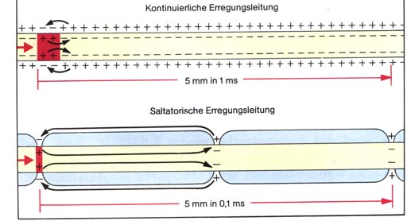

1. Einführung & Grundlagen
1. Das Nervengewebe
1.1 Aufbau der Nerven
Nervenzellen bestehen grundlegend aus einem Zellkörper, dem Soma, mit Zellkern und mehreren Fortsätzen. Der Hauptstrang, mit dem die Nervenzelle Erregungen zu anderen Zellen weiterleitet, wird Neurit oder auch Axon genannt. Die übrigen werden als Dendriten bezeichnet, hier docken zum Beispiel Fortsätze von anderen Nervenzellen an. Wie alle Zellen besitzen auch die Nervenfasern eine schützende Membran, sie ist zudem der wichtigste Bereich zur Reizweiterleitung. Im Soma der Zelle befinden sich eine Vielzahl von Neurotubuli und Neurofilamenten, die einen schnellen Transportweg für Neurotransmitter darstellen.
Der Neurit der Nervenzelle kann nun entweder in Schwann-Zellen eingebettet vorliegen, was bei dünnen marklosen Fasern der Fall ist. Liegt dementgegen eine dicke markhaltige Zelle vor, so befindet sich eine Umwicklung von Schwann Zellen vor, die sogenannte Myelinscheide. Da für die Erregungsweiterleitung allerdings ein Ionenaustausch zwischen Zellinnerem und der extrazellulären Flüssigkeit stattfinden muss, ist diese Markscheide von Ranvier´sche Schnürringe. Der Bereich zwischen zwei Ringen bezeichnet man als Internodium. [1]

1.2 Degeneration und Regeneration von Nervenfasern
Nach einer Durchtrennung von peripheren Nervenfasern ist es möglich sie erneut zu verbinden, sofern sie nicht zu weit voneinander entfernt sind. Sollte dies der Fall sein kann operativ nachgeholfen werden. Vom Zelleib getrennte Axone verfallen zwar, dennoch bleiben ihre Schwann-Zellen erhalten. Sie wachsen aufeinander zu um die entstandene Lücke zu schließen. Trotz des vorhandenen Wachstums dauert eine Regeneration mehrere Monate. Schiebt sich in der Zwischenzeit allerdings umliegendes Bindegewebe in die entstandene Lücke und verhindert das Zuwachsen, so bilden die Schwann-Zellen Amputationsneuromen aus. Es sind Knäule am Axonende zum Schutz. Im zentralen Nervensystem findet hingegen keine Regeneration statt. [1]
1.3 Neuroglia
Als Neuroglia bezeichnet man das Stützgewebe im Nervensystem, das in besonderer Form im Gehirn und Rückenmark vorkommt. [2] Es erfüllt wichtige Funktionen wie der Hüll- und Stützfunktion, der Isolation, der Kontrolle des Extrazellulären Raums, der Stoffwechselfunktion und die Abwehrfunktion. Im peripheren Nervensystem gehören die Schwann-Zellen und die Mantelzellen zu den Neuroglia, die sich um die Zellen legen. Im zentralen Nervensystem hingegen ist nur ein Bruchteil des vorhandenen Volumens von Neuronen eingenommen, der Rest wird von Gliazellen ausgefüllt. Diese Zellen werden Astrozyten, Oligodendrogliazellen und Ependymzellen. Die Astrozyten sind die größten Gliazellen mit reichlich Zellfortsätzen die mit Blutkapillaren und anderen Nervenzellen in Kontakt stehen. Ihre Hauptaufgabe ist zum einen das Stützen der Nervenzellen, indem sie Brücken zwischen einzelnen Nervenzellen bilden, ebenso können sie voneinander getrennt Nerven wieder verbinden. Zudem regeln sie die Aufrechterhaltung des Transmittergradienten im extrazellulären Raum und stabilisieren damit auch das Ruhepotenzial. Das Nervengewebe wird auch gegenüber Blutgefäßen und anderem Nervengewebe durch die Astrozyten abgeschirmt wodurch die Nervenfaser selber sehr isoliert vorliegt. Oligodendrogliazellen sind hingegen eher kleine Zellen mit zarten, kurzen Fortsätzen. Sie sind sehr kompakt vorliegend und liegen direkt an den Nervenzellen an wodurch sie die Markscheide der Axone bilden. Das Ependym ist im Gegensatz zu den Oligodendrogliazellen einzellig und kleiden die Hohlräume des Gehirns und des Rückenmarks aus, dienen demnach als eine Art Lückenfüller. [1]
Abbildung 1 - Neuronen und Neuroglia http://www.onlinebiologynotes.com/wp-content/uploads/2018/02/Nervous-tissue.jpg (07.05.2019, 11:49)
{kind=link}
2. Erregungsprozesse
2.1 Ruhepotential
Im Folgenden befinden wir uns an der Zellmembran einer Nervenzelle, die den extrazellulären vom intrazellulären Raum trennt. Die Zellmembran ist auf der Seite des intrazellulären Raumes negativ geladen, hier befinden sich besonders viele Kalium Ionen und organische Anionen im Cytoplasma der Zelle. Im positiven, extrazellulären Raum befinden sich dahingehend mehr Natrium Ionen und Chlorid Ionen, die, im Gegensatz zu den Kalium Ionen, nicht frei durch die Zellmembran diffundieren können. Allgemein herrscht somit ein Konzentrationsgefälle von K+ zwischen dem Nervenzellinneren und der extrazellulären Flüssigkeit, da sie aufgrund des Gefälles durch in der Membran befindlichen, offenen K+-Kanäle aus der Zelle hinaus wandern. Hieraus resultiert ein positiver Ladungsüberschuss im extrazellulären Raum, das Zellinnere wird negativ geladen. Dieses entstehende Zellmembran-Potenzial kann allerdings nicht ausgeglichen werden, da die Zellmembran selber undurchlässig ist für Protein-Anionen. Ein weiterer Grund ist, dass die K+-Ionen aufgrund der vorherrschenden Coulomb-Kräfte nicht wieder zurück in die Zelle diffundieren können, wodurch irgendwann der weitere Ausstrom der K+-Ionen durch den zunehmenden Ladungsuntersche gehemmt wird. Ab einem bestimmten Punkt halten sich nun die Coulumb-Kräfte und der Diffusionsdruck die Waage, da sich ein Fließgleichgewicht eingestellt hat. Diesen Punkt nennt man das Ruhepotenzial einer Zelle. Es ist eine messbare Spannung die zwischen dem Inneren einer ruhenden Zelle und der sie umgebene extrazelluläre Flüssigkeit herrscht. Der Spannungsunterschied, der bei menschlichen Zellen anliegt, beträgt etwa -70mV. Ein kleines Problem liegt nur darin, dass die Zellmembran nicht vollständig undurchlässig für Na+ ist. Sie diffundieren aufgrund der Coulumb-Kräfte ins Zellinnere, was nach und nach zu einem Ladungsausgleich führen könnte. Dies wird allerdings durch in der Membran vorhandene Natrium-Kaliumpumpen verhindert, die unter ATP Verbrauch drei Natriumionen aus der Zelle hinaus und zwei Kalumionen in die Zelle hinein transportieren. Somit verhindern sie nicht nur den Ausgleich, sondern helfen gleichzeitig, das Zellmembran-Potenzial aufrecht zu halten. [3] [4]
Abbildung 2 - Das Ruhepotenzial an der Membran https://www.abiblick.de/files/biologie/neurobiologie/ruhepotential/Ruhepotential.png (07.05.2019, 11:58)
{kind=link}
2.2 Aktionspotential
Die Weiterleitung von Reizen in einer Nervenzelle erfolgt über einen Binärcode. Das Ruhepotenzial ist das bei die Null, das Aktionspotenzial entspricht der Eins. Damit ein solcher Reiz weitergeleitet werden kann, müssen schnelle, spannungsgesteuerte Na+-Kanäle in der Lipidschicht vorliegen. Wird nun das Axon durch einen elektrischen Impuls gereizt der den Schwellenwert übersteigt, können sich die Kanäle für ein bis zwei Millisekunden öffnen und Natrium-Ionen in Richtung des Konzentrationsgefälles und angezogen von den negativen Ladungen im Inneren die Membran passieren. Danach schließt sich der Kanal wieder und kann erst nach einiger Zeit im Ruhepotenzial geöffnet werden. Neben den Na+-Kanälen liegen auch verzögerte, spannungsungesteuerte elektrogene Kaliumkanäle vor. Diese werden zusammen mit dem elektrischen Puls aktiviert, allerdings öffnen sie sich anders wie die Natriumkanäle nicht sofort. Verzögert geben sie den Weg für K+-Ionen vom Inneren der Zelle in den extrazellulären Raum frei. Diese Kanäle schließen sich erst wieder, wenn die K+-Ionen eine Ladungsumkehr hervorruft und die Außenseite im Verhältnis wieder positiv ist.
Der Ablauf eines Aktionspotenziales sieht wie folgt aus und lässt sich in sieben Abschnitte aufteilen:
1. Ruhepotenzial
An der Axonmembran herrscht ein Ruhepotenzial, die Zelle ist in einem erregbaren Zustand.
2. Depolarisation-Initialphase
Die Membran wird durch einen elektrischen Impuls bis zur Erregungsschwelle Depolarisiert, Na+-Kanäle öffnen sich, das heißt, dass das Zellinnere positiver wird. Die Spannung im Inneren nimmt ab.
3. Depolarisation-Aufstrich
Ist der Reiz groß genug, sodass die Erregungsschwelle überschritten wird, öffnen sich weitere spannungsgesteuerte Natriumkanäle. Dann können Natriumionen durch den Diffusionsdruck ins Innere der Zelle strömen wodurch die Depolarisation weiter ansteigt und weitere Natriumkanäle geöffnet werden. Dies hat zur Folge, dass mehr Natrium in die Zelle strömt, wodurch das negative Membranpotenzial positive Werte erreicht. Als letzten Schritt öffnen sich die verzögerten K+-Kanäle. Da das Innere nun positiv geladen ist strömen die Kalium Ionen aufgrund des Diffusionsdruck und der Coulumb-Kräfte wieder aus der Zelle hinaus.
4. Spitze (Peak)
An dieser Stelle kippt das Potenzial wieder. Der Natriumeinstrom in die Zelle nimmt ab, zum einen, weil sich nach und nach immer mehr Natriumkanäle schließen und danach erstmal refraktär, das heißt unerregbar, bis zum Erreichen des Ruhepotenzials sind. Zum anderen wird der Einstrom durch die Ladungsumkehr wieder gestoppt. Durch die Abnahme des Natriumeinstroms steigt gleichzeitig wieder die Zunahme des Kaliumausstromes, da sich immer mehr Kaliumkanäle öffnen.
5. Repolarisation
Schließlich sind so viele Natriumkanäle geschlossen, das der Einstrom versiegt. Dahingegen öffnen sich immer mehr Kaliumkanäle wodurch der Kaliumausstrom anschwillt und sich das Membranpotenzial wieder dem Ruhepotenzial annähert.
6. Hyperpolarisation
Da die Kaliumkanäle relativ lange geöffnet sind, können mehr Kalium Ionen ausströmen als zur Wiederherstellung des Ruhepotenzials nötig wären. Die Potenzialwerte werden somit kurzzeitig negativer als das Ruhepotenzial.
7. Ruhepotenzial
Letztendlich sind alle Kaliumkanäle geschlossen und das überschüssige Kalium diffundiert durch die Membran, wodurch sich das Ruhepotenzial wieder einstellt. Mitverantwortlich sind hierbei auch die ATP verbrauchenden Natrium-Kalium-Pumpen.
Ein weiterer wichtiger Punkt ist die Refraktärzeit. Einmal geöffnete Natriumkanäle sind nach dem Schließen erstmal blockiert und können erst nach Erreichen des Ruhepotenzials wieder in einen aktivierten Zustand versetzt werden. Das hat zur Folge, dass während eines Aktionspotenzials kein weiteres gebildet werden kann. Dieser Zeitabschnitt nennt sich Refraktärzeit. Eine weitere Besonderheit ist zudem, dass Alles-oder-Nichts-Gesetz der Erregung. Es besagt, dass wenn ein elektrischer Impuls groß genug ist um die Erregungsschwelle zu erreichen, so ist das Aktionspotenzial immer voll ausgebildet. Wird er nicht erreicht, so bleibt das Aktionspotenzial aus. [5] [6]
Abbildung 3 - Das Aktionspotenzial http://www.jagemann-net.de/biologie/bio13/neurobiologie/aktionspotenzial/files/aktionspotenzial.png (29.04.2019, 23:42)
{kind=link}
Der Verlauf eines einzelnen Aktionspotenziales am Herzmuskel kann sich über einige hundert Millisekunden hinziehen, in Nervenzellen hingegen dauert ein solches nur 1-2ms. Erst nach der Refraktärzeit kann ein weiteres ausgelöst werden. Hierbei unterscheidet man absolute Refraktärzeit von etwa 0,5ms bei Neuronen, bei der überhaupt kein Aktionspotenzial ausgelöst werden kann und der relativen Refraktärzeit von etwa 3,5ms, bei der stärkere Reize zur Auslösung nötig sind. Somit ist die Refraktärzeit demnach entscheidend für die Maximalfrequenz mit der ein Neuron Aktionspotenziale bildet und weiterleitet. [7]
2.3 Erregungsweiterleitung und Informationsübertragung
An markhaltigen Nervenfasern
Diese Informationsweiterleitung erfolgt im Bereich der Myelinscheiden, eine Lipidschicht, die viele Axone von Nervenfasern umfasst. Hier liegt eine nahezu vollständige Abschirmung vom intrazellularen Raum zum extrazellulären vor, wodurch weder im Bereich des Somas (Zellkörper mit Zellkern und Dendriten) noch bei der Myelinscheide ein Aktionspotenzial entstehen kann. Ursache hierfür ist, dass sich Schwann-Zellen spiralförmig um den Nervenfortsatz wickeln. Anders sieht es allerdings im Bereich des Axonhügels, dem RAVIER´schen Schnürringen und den Endknöpfchen aus. Hier findet nämlich ein Kontakt mit der extrazellulären Flüssigkeit statt und liegen spannungsgesteuerte Ionenkanäle vor. Demnach ist es auch möglich, an diesen Stellen ein Aktionspotenzial auszubilden, sofern ein überschwelliges Potenzial die Zelle erreicht. Die Ausbildung eines Aktionspotenziales hat die Depolarisation des zweiten Schnürrings zur Folge, was zur Auslösung eines weiteren Aktionspotenziales führt. Dieses “weiterspringen” des Potenzials von einem zum nächsten Schnürring nennt man saltatorische Erregungsleitung und profitiert von einer schnellen Reizweiterleitung von max.130m/s. Daraus folgt, dass je dicker die Fasern und je größer die Abstände der Schnürringe ist, desto schneller erfolgt der Transport der Erregung.
An marklosen Nervenfasern
Hierbei liegt keine Myelinscheide um die Nervenfasern vor, die Ionenkananäle sind gleichmäßig über die gesamte Länge verteilt. Dadurch hat die Depolarisation der Zellmembran eine direkte Auswirkung auf die anliegenden Membranabschnitte und löst auch hier ein Aktionspotenzial aus. Das Ganze ist eine Art “Kriechstrom”, denn es erfolgt eine elektrotonische Ausbreitung der Potenzialänderung. Da der Reiz entlang des Axons weitergeleitet wird, handelt es sich hierbei um eine sogenannte kontinuierliche Erregungsleitung. Diese Form ist zudem langsamer mit maximal 20m/s, da sie stark vom Innenwiderstand, der Temperatur und auch dem Axon Durchmesser abhängig ist. [8]
 Abbildung 4 - Reizweiterleitung n markhaltigen und marklosen Zellen https://www2.vobs.at/bio/physiologie/a-neuro-1.php (30.04.2019, 00:12)
3. Erregungsübertragung in Synapsen
3.1 Die chemische Synapse
Nun wird auf die Erregung und die Weiterleitung des Aktionspotenziales an den Nervenzellen eingegangen. Dabei wird zwischen der chemischen und der elektrischen Synapse unterschieden. Bei der chemischen Synapse handelt es sich um eine doppelte Umschaltung, bei der ein elektrischen Signal erst in ein chemisches und anschließend wieder in ein elektrisches umgewandelt wird. Zu allererst erreicht das Aktionspotenzial das Endknöpfchen der Nervenzelle. Daraufhin bewirkt der Natrium-Einstrom, dass sich in der Nachbarschaft ein lokales Potenzial an der Membran ausbildet. Hier sind keine Na+-Kanäle mehr vorhanden, wodurch das Endknöpfchen depolarisiert wird was wiederrum das Öffnen von elektrogenen Ca2+-Kanälen und einem daraus resultierenden Ioneneinstrom zur Folge hat. In der Membran liegende Caliumpumpen beginnen sofort unter ATP-Verbrauch das Calium wieder aus der Zelle zu entfernen. Das Calium bindet im Endknöpfchen an bestimmte Proteine der Vesikelmembran, was zu einer Fusion der mit Transmitter Acetylcholin gefüllten Vesikel und der präsynaptischen Membran führt. Durch die Exocytose gelangen die Transmitter nun in den synaptischen Spalt, dem Bereich zwischen dem Endknöpfchen und der postsynaptischen Membran der nächsten Nervenzelle. Die Menge und der Rhythmus der Ausschüttung wird durch die Frequenz der Aktionspotenziale bestimmt. Die Transmitterstoffe gelangen nun durch Diffusion durch den synaptischen Spalt zur postsynaptischen Membran, wo sie auf Na+-Kanäle stoßen. Sie sind sowohl Ionenkanäle als auch Rezeptoren. Treffen nun zwei Acetylcholin auf diese Kanäle können sie an den Bindungsstellen des Kanals anlagern, worauf er sich öffnet. Somit können im Spalt befindliche Na+ in die Zelle einströmen, was eine weitere Depolarisation auslöst. Hierbei entsteht ein erregendes postsynaptisches Potenzial, ein sogenanntes EPSP. Es wird elektronisch weitergeleitet, sofern es am Axon überschwellig ist. Der Ionenkanal schließt sich wieder, wonach er eine gewisse „Erholungsphase“ benötigt, bis er sich wieder öffnen kann. Auch das Acetylcholin löst sich wieder vom Rezeptor und wird beim Antreffen auf ein in der postsynaptischen Membran befindliches Enzym, der Acetylcholinesterase in Acetyl und Cholin gespalten. Diesen Vorgang nennt man eine enzymatische Deaktivierung. Das Cholin wird als letzten Schritt wieder über Cholinpumpen ins Endknöpfchen aufgenommen wo es mit AcetylCoenzymA erneut reagieren kann und im Vesikel isoliert wird. [6] [9]
Abbildung 5 - Aufbau der chemischen Synapse http://www.apsubiology.org/anatomy/2010/2010_Exam_Reviews/Exam_3_Review/chemical%20synapse%20fig.11.18.jpg (07.05.2019, 12:30)
{kind=link}
3.2 Die elektrische Synapse
Bei der elektrischen Synapse liegen prä- und postsynaptische Membran sehr nah aneinander, wodurch eine Signalübertragung über chemische Hilfsstoffe und deren Diffusion nicht notwendig ist. Hier verbinden Proteinkomplexe, sogenannte Gap Junctions beide Zellen miteinander, wodurch ein direkter Stromfluss zwischen ihnen ermöglicht wird. Die elektrische Synapse arbeitet schneller und verzögerungsfreier als die chemische, dennoch ist hier keine Feinregulierung der Signale möglich, weshalb die chemische Synapse häufiger anzutreffen ist. Die Hauptaufgabe der Gap Junctions scheint die Synchronisation von verschiedenen Nervenzellengruppen zu sein, besonders derjenigen, die Rhythmusgebend sind, wie zum Beispiel Herzmuskeln. [10]
 Abbildung 6 - Aufbau der motorischen Synapse
https://upload.wikimedia.org/wikipedia/commons/thumb/b/b7/Gap_cell_junction-en.svg/1200px-Gap_cell_junction-en.svg.png (07.05.2019, 12:36)
Abbildung 6 - Aufbau der motorischen Synapse
https://upload.wikimedia.org/wikipedia/commons/thumb/b/b7/Gap_cell_junction-en.svg/1200px-Gap_cell_junction-en.svg.png (07.05.2019, 12:36)
{kind=link}
3.3 Erregende und hemmende Signale
Die Signale, die an einer Synapse weitergeleitet werden unterteilt man in zwei Gruppen: Die, die für eine Weiterleitung eines Signales verantwortlich sind und die, die die Signalweitergabe hemmen.
Exzitatorisches postsynaptisches Potential (EPSP)
Das EPSP beschreibt die positive Veränderung des Membranpotenziales, dh. der Auslösung eines Aktionspotenziales. Exzitatorisch steht hierbei für erregend, denn nachdem die Neurotransmitter an den Rezeptor binden tritt die Depolarisation der Membran ein. Der Folgedendrit leitet die Erregung dann über das Soma bis zum Axonhügel weiter, wo die einzelnen Signale miteinander verrechnet werden.
Die Wahrscheinlichkeit der Auslösung eines weiteren Aktionspotenziales wird erhöht, sofern mehrere EPSP am Axon eintreffen die miteinander summiert werden, oder die Depolarisation länger anhält.
Inhibitatorisches postsynaptisches Potenzial (IPSP)
IPSP arbeiten im Prinzip genau wie EPSP durch das Andocken von Transmittern an den Rezeptoren. Hierbei werden aber die Kalium- und Chloridkanäle geöffnet, wordurch das K+ nach außen diffundiert. Dies führt zu einer stärkeren Depolarisation des Zellinneren was durch den Einstrom von negativen Chloridionen in das Zellinnere verstärkt wird. Beides zusammen führt dann zu einer Hyperpolarisation der postsynaptischen Membran, da die Erregungsleitung verhindert wird.
Ob ein EPSP oder ein IPSP vorliegt, hängt nicht von den Transmittermolekülen ab, sondern von der Synapse selber. Sie können entweder hemmend oder aktivierend sein, niemals aber beides zusammen. [11]
3.4 Synaptische Überträgerstoffe und Rezeptoren
Neurotransmitter sind für die Erregungsweiterleitung unerlässlich, denn ohne sie wäre eine Interaktion der einzelnen Synapsen miteinander gar nicht möglich. Voneinander unterscheiden sich hinsichtlich ihrer chemischen Stoffklassen, denn es gibt neben dem überaus wichtigen Acetylcholin auch weitere Transmitter wie Monoamine, Aminosäuren und Oligopeptide sowie Adenosin und ATP. Die Gemeinsamkeit aller besteht in den Aspekten der präsynaptischen Synthese, der vesikulären Speicherung, der Ausschüttung aus Vesikeln bei eintreffen eines Aktionspotenziales, bei der anschließenden Bindung an Rezeptoren und der darauf folgenden Eliminierung nach der Erregungsübertragung. Erfüllt ein Stoff diese Anforderungen nicht, so kann es kein Neurotransmitter sein. Die Transmitter binden nach ihrer Ausschüttung in den synaptischen Spalt an für sie vorgegebene Rezeptoren und Bewirken damit die Öffnung von Liganden-gesteuerten Ionenkanälen wobei es zu einer sogenannten ionotopen synaptischen Übertragung des Reizes kommt. Die Kanäle desensitisieren in kürzester Zeit, das heißt ihre Empfindlichkeit ab, wobei die intervallartige Öffnung der Kanäle ebenfalls abnimmt, bis sie sich letztlich nicht mehr öffnen. Bei der indirekten Liganden-gekoppelten Ionenkanälen bindet der Transmitter, die nicht Teil des Kanals ist. Das Rezeptormolekül aktiviert daraufhin ein Hilfsprotein mit dem Namen G-Protein, das erst im aktivierten Zustand die Öffnung des Kanals veranlasst. Dies geschieht entweder durch das Hilfsprotein direkt oder über einen second messenger. Die daraufhin ermöglichte Übertragung nennt sich metabotrope synaptische Übertragung. Ein einzelner Transmitter kann sowohl ein ionotropes als auch ein metabotropes Signal auslösen. Neurotransmitter können auf verschiedenen Wegen eine Signalweiterleitung bewirken, im Folgenden wird auf die Wirkungsweise des am häufigsten vorkommenden Transmitters, des Acetylcholins, Bezug genommen. Die meisten Synapsen des Zentralnervensystems und des vegetativen Nervensystems verwenden ACh als Botenstoff, diese bezeichnet man auch als cholinerg. Cholinerge Synapsen sind entweder nicotinerg, was bedeutet, dass Nicotin als Antagonist wirkt, oder muscarinerg, wobei Muskarin hemmend wirkt. Die Bindungsstelle von Acetylcholin befindet sich auf dem Nicotin-Rezeptor, die Bindung löst ein ionotropes Signal aus, da es sich um einen Liganden-gekoppelten Kanal handelt. Die Reizweiterleitung ist sehr begrenzt, da Acetylcholin enzymatisch am Rezeptor in Acetat und Cholin gespalten wird. Wie oben erwähnt können andere chemische Substanzen, wie Nicotin, als Antagonisten wirken, das heißt sie interagieren mit den gleichen spezifischen Rezeptoren, lösen aber nicht wie den von ihnen abhängigen Effekt aus. Ein solcher ist bei einem nicotinischen Rezeptor zum Beispiel Tubocurarin, ein Wirkstoff aus indianischem Pfeilgift. Es blockiert den Rezeptor durch Besetzung und verhindert die Bindung von ACh, wodurch keine Signale übertragen werden können. Allgemein liegt hierbei eine kompetitive Hemmung vor, da beide Stoffe um die Bindungsstelle konkurrieren und der Effekt lediglich von der vorhandenen Stoffkonzentration abhängt. [1]
Literatur:
[1] Buchquelle: Thews, G., Mutschler, E., & Vaupel, P. (1999). Anatomie, Physiologie,
Pathophysiologie des Menschen (Vol.4). Stuttgart: Wissenschaftliche Verlagsgesellschaft.
[2] https://www.wissen.de/fremdwort/neuroglia (07.05.2019 , 10:27)
[3] https://www.abiblick.de/ruhepotential (29.04.2019, 22:56)
[4] https://de.wikipedia.org/wiki/Ruhemembranpotential (29.04.2019, 22:56)
[5] https://www.spektrum.de/lexikon/neurowissenschaft/aktionspotential/293 (29.04.2019 23:44)
[6] Buchquelle: Erdmann, A., Erdmann, U., Prof. Dr. Martens, A., Dr. Müller, O., Dr. Paul, A. (2005). Neurobiologie. Grüne Reihe, Materialien SII, Schroedel
[7] https://de.wikipedia.org/wiki/Aktionspotential (29.04.2019, 23:43)
[8] https://www.der-mensch.net/gewebe/nervenfasern/ (30.04.2019, 00:13)
[9] https://de.serlo.org/biologie/biologie-menschen/nervensystem-synapse/aufbau-funktion-
chemischen-synapse (07.05.2019, 12:35)
[10] https://de.wikipedia.org/wiki/Gap_Junction#Gap_Junctions_als_elektrische_Synapsen (01.05.2019, 23:40)
[11] http://www.biologie-schule.de/epsp-ipsp.php (07.05.2019, 13:10)